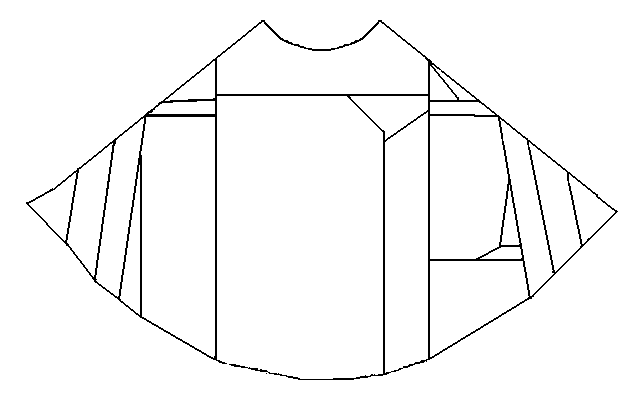
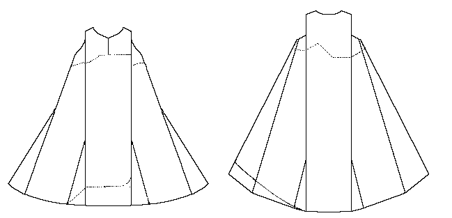

More usually referred to as the Mantle of St. Birgitta (or, Il Mantello di Santa Brigida), studies by the late Anne Marie Franzen suggest that the garment fragments, held by the Convent of Santa Lucia in Selci in Rome, were more likely a 14th century woman's surcote. The material is a fine dark-blue/mauve wool, and was likely quite expensive when it was first made.
Note that this should not be confused with the "Mantle of St. Brigit".
Return to Contents
Some Clothing of the Middle Ages - Tunics - St. Birgitta's Cloak or Dress, by I.
Marc Carlson, Copyright 1998, 1999. This code is given for the free exchange of
information, provided the Author's Name is included in all future revisions, and no money
change hands-